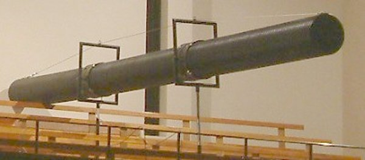
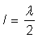
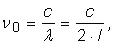
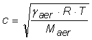
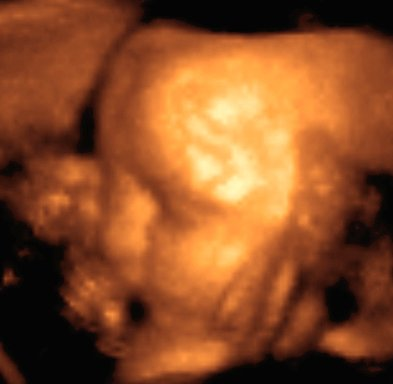

D.5. |
Infrasunete şi ultrasunete |
Cea mai gravă notă care poate fi cântată la un pian are frecvenţa fundamentală 27,5 Hz.
De ce oare nu se realizează piane care să genereze sunete şi mai grave?
Deşi tehnic ar fi posibil (adăugând, de exemplu, corzi mai lungi), nu ar fi de folos nimănui: undele sonore cu frecvenţa sub aproximativ 20 Hz nu mai provoacă nici unui om senzaţii auditive.
Într−una dintre activităţile experimentale precedente, ai generat infrasunete: vedeai cum membrana difuzorului vibrează, puteai simţi vibraţiile atingând membrana, dar nu auzeai nimic!
Deşi nu provoacă senzaţii auditive, infrasunetele reprezintă totuşi propagarea unor perturbaţii care sunt resimţite ca trepidaţii ale corpului.
Erupţiile vulcanice, vântul, tunetele, cascadele, valurile, căderea meteoriţilor, mişcările gheţarilor, cutremurele, avalanşele, elefanţii − toate acestea generează infrasunete!
Dar şi rachetele, vehiculele, compresoarele, ventilatoarele de tavan sunt surse de infrasunete.
Infrasunetele cu nivele acustice ridicate (140 dB sau mai mult, pentru două minute) provoacă oamenilor stări de anxietate, greaţă, le perturbă echilibrul şi orientarea.
În 2003 a fost efectuat la Londra un experiment utilizând infrasunete: în timpul unui concert au fost suprapuse, din când în când, peste sunetele "normale" ale concertului, infrasunete cu frecvenţa aproximativ 17 Hz.
Generatorul de infrasunete a fost realizat dintr−o conductă lungă de 7 m. La unul dintre capete conductei a fost amplasat un difuzor de mari dimensiuni (figura 1D5−1).

Fig. 1D5-1. Tubul generatorului de infrasunete.
Cât te aştepţi să fie frecvenţa de rezonanţă a acestui tub?
La capătul la care este montat difuzorul, amplitudinea de vibraţie a moleculelor de aer este maximă: la acest capăt se formează un ventru.
În condiţii de rezonanţă, la celălalt capăt ne aşteptăm să se formeze tot un ventru, astfel încât tubul să radieze în aerul înconjurător unde sonore de intensitate maximă.
Cea mai coborâtă frecventă pentru care există ventre la ambele capete ale tubului este cea pentru care lungimea tubului este egală cu distaţa dintre două ventre vecine ().
Aşadar, frecvenţa fundamentală de rezonanţă aşteptată este:

unde c este viteza sunetului în aer ().
Pentru un tub cu lungimea 7 m, la 200C, rezultă că frecvenţa fundamentală de rezonanţă aşteptată este 24,5 Hz.
Frecvenţă fundamentală de rezonanţă măsurată a fost 17,5 Hz. Discrepanţa dintre valoarea aşteptată şi cea măsurată se datorează, în principal, faptului că ventrul se formează mai departe de capătul liber, ca şi când tubul ar fi în realitate mai lung.
Spectatorii au raportat creşterea semnificativă a senzaţiilorstranii (anxieatate, furnicături la nivelul coloanei vertebrale şi ale încheieturilor, senzaţie de răcire).
Pentru a elimina raportările subiective, acelaşi concert a fost prezentat unei audienţe asemănătoare, în aceeaşi sală, fără a adăuga infrasunete.
Acest grup de control a raportat cu 22% mai puţine senzaţii stranii, confirmând astfel rolul infrasunetelor.
Activitatea experimentală 1D5−1
Foloseşte generatorul audio şi determină cea mai ridicată frecvenţă care îţi mai produce senzaţii auditive.
Efectuează aceeaşi determinare şi în cazul unui adult.
Pentru fiecare dintre noi, există o frecvenţă maximă a undelor sonore care mai produce senzaţii auditive. Această frecvenţă maximă este diferită pentru persoane diferite şi, în general, scade odată cu înaintarea în vârstă.
Nici un om nu poate avea însă senzaţii auditive pentru frecvenţe care depăşesc 20 kHz.
O imprimantă cu jet de cerneală "aruncă" pe hârtie, în fiecare secundă, zeci de mii de picături minuscule de cerneală.
Perturbaţiile pe care le provoacă în aer aceste picături se propagă ca unde ultrasonore.
Imprimanta pare silenţioasă (auzi doar zgomotul motoarelor), dar, dacă ai putea auzi ultrasunetele, ai auzi imprimanta "cântând" în ritmul în care "împroaşcă" cerneala!
Activitatea experimentală 1D5−2
Ascultă, printr−o tehnică specială, ultrasunetele emise de o imprimantă cu jet de cerneală!
Pasul 1 Suspendă microfonul unei căşti de calculator, acolo unde pătrunde hârtia în imprimantă, astfel ca microfonul să nu atingă imprimanta.
Pasul 2 Utilizează aplicaţia Sound Recorder din Windows XP (sau oricare altă aplicaţie care îţi permite să înregistrezi sunete cu calculatorul).
Înregistrează aproximativ 20 de secunde de "linişte" şi salvează fişierul.
Pasul 3 Înregistrează aproximativ 20 de secunde, în timp ce imprimanta imprimă o pagină de text sau imagini. Salvează şi acest fişier.
Pasul 4 Închide microfonul şi ascultă cele două înregistrări.
Apoi, asultă−le pe rând, la viteze din ce în ce mai mici (comanda Decrease speed înjumătăţeşte viteza de redare).
Compară cele două înregistrări, atunci când viteza de redare este de 32 de ori mai mică decât cea normală.
Cum ai putea oare determina distanţa până la un obstacol, utilizând unde sonore?
Emiţând un semnal scurt, acesta se va propaga până la obstacol, se va reflecta de acesta şi se va întoarce la cel care l−a emis (ecou).
Cunoscând viteza de propagare şi întârzierea pe drumul dus−întors, poate fi determinată distanţa până la obstacol.
Precizia determinării distanţei până la obstacol depinde esenţial de lungimea de undă: nu pot fi emise perturbaţii care să aibă mai puţin de un ciclu (particulele mediului trebuie măcar "împinse" şi apoi lăsate să revină, după un ciclu, la poziţia iniţială).
Precizia de determinare depinde astfel de durata unui ciclu: cu cât aceasta este mai mică, cu atât cronometrarea drumului dus−întors este mai precisă.
Astfel, precizia de determinare a distaţei până la obstacol depinde de lungimea de undă, fiind comparabilă cu aceasta.
Cât este lungimea de undă, în aer, a unui sunet cu frecvenţa 340 Hz?
Dar a unui ultrasunet cu frecvenţa 340 kHz?
Ce îţi poate oferi o precizie mai mare de determinare a distanţei până la un obstacol: sunetul sau ultrasunetul?
Un aparat fotografic poate determina automat distanţa până la subiectul care este fotografiat, prin metoda ecoului, utilizând ultrasunete.
Tot cu ultrasunete pot fi detectate defecte interne în piese sau construcţii, urmărind ecourile provenite de la graniţa defectelor.
Submarinele detectează obstacolele tot cu ajutorul ultrasunetelor, folosind sonarul (asemenea delfinilor).
Folosind ultrasunete cu frecvenţa de ordinul megahertzilor, poate fi investigat în detaliu interiorul organismelor vii, fără a le afecta prea mult (ecograful).
La graniţa dintre două ţesuturi cu consistenţă diferită, se produce reflexia ultrasunetelor (ecou).
Un computer interpretează ecourile sosiste şi generează o imagine tridimensională a obstacolelor întâlnite.
Astfel, poate fi văzut un copil înainte ca acesta să se nască ! (figura 1D5−2)
|  | Fig. 1D5−2. Imaginea unui copil nenăscut încă, obţinută cu ecograful tridimensional. |